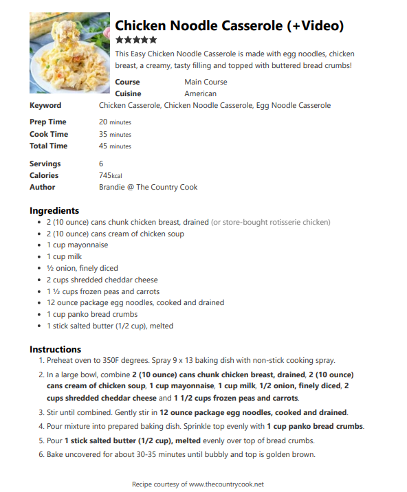

Chicken Noodle Casserole
Approx Prep Time: 20 minutesCook Time: 35 minutes
Total Time: 55 minutes
Ingredients:
- 2 (10-ounce) cans of chunk chicken breast, drained
- 2 (10-ounce) cans cream of chicken soup
- 1 cup mayo
- 1 cup milk
- ½ cup onion, finely diced
- 2 cups shredded cheddar cheese
- 1 ½ cups frozen peas and carrots
- 12-ounce package of egg noodles, cooked and drained
- 1 cup panko bread crumbs
- 1 stick of salted butter, melted
Instructions:
- Preheat oven to 350F degrees. Spray 9 x 13 baking dish with non-stick cooking spray
- Cook 12 ounces of egg noodles according to the instructions on the package
- In a large bowl, combine the cans of chunk chicken breast drained, the cans cream of chicken soup, mayo,
milk, onion, finely diced, shredded cheddar cheese, and the frozen peas and carrots. - Stir until combined. Gently stir in drained and cooked noodles.
- Pour the mixture into prepared baking dish. Sprinkle top evenly with 1 cup of panko bread crumbs.
- Pour 1 stick of melted salted butter evenly over top of bread crumbs
- Bake uncovered for about 30-35 minutes until bubbly and top is golden brown.
Notes:
- A good substitute for the chicken would be rotisserie chicken or any leftover chicken
- Cream of mushroom or cream of celery are also good substitutes for the cream of chicken soup
- Regular bread crumbs or crushed Ritz crackers can be substituted for panko bread crumbs